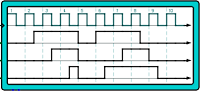

Digital oscilloscope
Digital oscilloscope
| Librairie : | Input/Output Extra |
| Introduction : | 2.15 in Logisim ITA Component |
| Apparence : |  |
Comportement
Broches
Attributs
- Nombre d'entrées
- Nombre d'états
- Tracer la ligne de front de l'horloge
- Afficher l'attribut horloge
- Couleur de la bordure
- Emplacement de l'étiquette
- Police du label
Comportement de l'outil pousser
bla bla
Comportement de l'outil text
bla bla
Retour à Référence de la bibliothèque